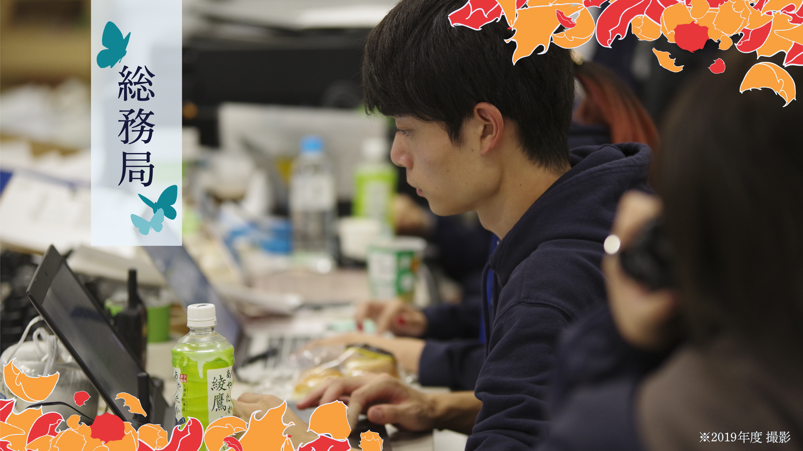

<!doctype HTML>
<html lang="ja">
    <head>
        <meta charset="UTF-8">
        <title>総務局</title>
        <meta name="description" content="総務局">
        <link rel="icon" type="png" href="logo.png">
        <link rel="stylesheet" href="soumu.css">
    </head>

    <body>
        <header>
            <!--▽▽ヘッダーロゴ▽▽-->
                  <div class="logo1">
                      <a href="#" id="headerlogo">
                      </a>
                  </div>
            <!--△△ヘッダーロゴ△△-->
            
            
            <!--▽▽ハンバーガーメニュー▽▽-->
                  <div id="hamburger">
                      <div class="icon">
                          <span></span>
                          <span></span>
                          <span></span>
                      </div>
                  </div>
            <!--△△ハンバーガーメニュー△△-->
            
             
            <!--▽▽ハンバーガーメニューのリスト▽▽-->
                  <nav class="sm navi">
                    <ul class="lists">
                      <li class="lili"><a  class="listwords" href="#">代表挨拶</a></li>
                      <li class="lili"><a  class="listwords" href="#">早稲田祭について</a></li>
                      <li class="lili"><a  class="listwords" href="#">新歓イベント</a></li>
                      <li class="lili"><a  class="listwords" href="#">活動について</a></li>
                      <li class="lili"><a  class="listwords" href="#">連載記事</a></li>
                      <li class="lili"><a  class="listwords" href="#">年間スケジュール</a></li>
                      <li class="lili"><a  class="listwords" href="#">フォトギャラリー</a></li>
                      <li class="lili"><a  class="listwords" href="#">入会方法</a></li>
                      <li class="lili"><a  class="listwords" href="#">お問い合わせ</a></li>
                   </ul>
                 </nav>
            <!--△△ハンバーガーメニューのリスト△△-->
            
        
            <!--▽▽ヘッダーリスト▽▽-->
                  <nav class="pc navi">  <!--pcクラスを追記-->
                    <ul class="lists">
                      <li class="lili"><a  class="listwords" href="#">代表挨拶</a></li>
                      <li class="lili"><a  class="listwords" href="#">新歓イベント</a></li>
                      <li class="lili"><a  class="listwords" href="#">連載記事</a></li>
                      <li class="lili"><a  class="listwords" href="#">入会方法</a></li>
                      <li class="lili"><a  class="listwords" href="#">お問い合わせ</a></li>
                    </ul>
                  </nav>
            <!--△△ヘッダーリスト△△-->
            
                </header>
            
            
            <!--▽▽jQuery▽▽-->
                <script src="jquery-3.6.0.min.js"></script>
                  <script>
                    $('#hamburger').on('click', function(){
                    $('.icon').toggleClass('close');
                    $('.sm').slideToggle();
                    });
              
                  </script>
            <!--△△jQuery△△-->
 


        <style>
            header {
    height: 60px;
    width: 100%;
    padding: 0px 0px;
    background-color:#78c1cd;
    position: fixed;
    top: 0;
    z-index: 10;
    display: flex;
  }
  
  
  .lili:hover{
    filter: alpha(opacity=85);
    -moz-opacity: 0.85;
    opacity: 0.85;
  
  }
  
  .logo1 {
    font-size: 25px;}
    
    .hedlogo{
  height:55px;
  width:55px;
  margin-left:6px;
    }
    
  
  .hedlogo:hover  {
    filter: alpha(opacity=85);
    -moz-opacity: 0.85;
    opacity: 0.85;
   
  }
   .navi{
    margin: 0 0 0 auto;
  }
  
  .lists {
    display: flex;
    list-style: none;
    padding: 0;
    margin: 0;
  }
  
  .listwords {
    color: #eaf4fc;
    text-decoration: none;
    display: block;
    line-height: 60px;
    padding: 0 20px;
  }
  
  .sm {
    display: none;
  }
  .toppagelogo{
    height:500px;
    width:500px;
    padding:400px;
  margin:0 auto;
  }
  /*---------------------------------------------------------------*/
  @media (max-width: 900px) {
  
    .pc {
      display: none;
    }
  
    #hamburger {
      background-color: transparent;
      position:relative;
      float:right
      cursor:pointer;
      margin: 0 0 0 auto;
      height: 60px;
      width: 60px;
    }
  
    .icon span {
      position: absolute;
      left: 15px;
      width: 30px;
      height: 4px;
      background-color:#eaf4fc;
      border-radius: 8px;
      transition: ease 0.75s;
    }
  
    .icon span:nth-of-type(1) {
      top: 16px;
    }
    .icon span:nth-of-type(2) {
      top: 28px;
    }
    .icon span:nth-of-type(3) {
      bottom: 16px;
    }
  
    .close span:nth-of-type(1) {
      transform: rotate(45deg);
      top: 28px;
    }
  
    .close span:nth-of-type(2) {
      opacity: 0;
    }
  
    .close span:nth-of-type(3) {
        transform: rotate(-45deg);
        top: 28px;
    }
  
    .sm {
        top: 60px;
        left: 0px;
        position: absolute;
        z-index: 10;
        width: 100%;
        background-color: #78c1cd;
        
    
    }
  
   .lists {
      flex-direction: column;
    }
  
    .listwords {
      text-align: center; 
      border-top: solid 0.5px #eaf4fc;
    }
  
  
  .list {
    list-style: none;
    margin: 0;
    padding: 0;
  }
        </style>

        <div class="titlephoto">
        
        </div>
        <div class="wrapper">

          <h2>総務局とは</h2>
        <p class="setsumei">
          みなさんは「運営スタッフ」と聞いて何を思い浮かべますか？ 
          えんじのはっぴを思い浮かべる人が多いのではないでしょうか。
          実は、そのはっぴの裏側にはたくさんの人の想いと努力がつまっています。
          総務局は、そんな「はっぴの背中」を支える局です！ 具
          体的には、人・物・情報の3つの内部資源を管理し、運営スタッフにとって最適な活動環境を整えることを目指して活動しています。
          総務局の1番の魅力は、さまざまな分野で活躍する運営スタッフを間近で見て、実際に彼らの力になることができるということです。
          一度総務局に入ったら、あなたも運営スタッフや早稲田祭のとりこになること間違いなしです。
          アットホームな雰囲気が好き、全体的な視点を持つのが得意、頑張る誰かのために頑張りたい、
          そんなあなたを「はっぴの背中」を想う場所、総務局で待っています！


        </p>
        
        <h3>○人的資源管理チーム
        </h3>
        <p>
            <!-- チーム紹介の文字情報をここに入れる -->
            運営スタッフの当日のシフトの作成・運用を行う人事や、運営スタッフ全体で行うレクや合宿などの企画・運営をする全体福利を行うチームです。私たちが作成したシフトにより早稲田祭当日の運営スタッフ約600人全員の動きが決まるため、早稲田祭全体への影響が非常に大きい活動です。 また、全体福利もたくさんのメンバーがいる運営スタッフの団結力を高めるうえで欠かせないものです。どちらも運営スタッフを支える重要な活動となっています。
        </p>


        <h3>◯物的資源管理チーム
        </h3>
        <p>
             <!-- チーム紹介の文字情報をここに入れる -->
             運営スタッフが使用する備品や部室、倉庫の管理を行うチームです。1年を通して、企画や広報などに使用する備品の申請対応や購入、倉庫の整理をし、運営スタッフ一人ひとりがそれぞれの活動に専念できるような環境の整備をしています。私たちと一緒に、祭を支える力になりませんか？
        </p>


        <h3>○情報資源管理チーム
        </h3>
        <p>
            <!-- チーム紹介の文字情報をここに入れる -->
            運営スタッフが利用する内部サイトやGoogleアカウントの作成・管理、内部向けのSNSアカウントを用いた情報発信とその管理を中心とし、活動するチームです。早稲田祭直前にはカウントダウン企画などを行い、運営スタッフの一体感を高める活動もしています。混沌極まる早稲田祭当日にはトランシーバーの管理とその議事録を行い、運営スタッフ間での情報共有が滞りなくできるよう全力のサポートをします。運営スタッフの情報系を司るチームと言えます。
        </p>

        </div>
        </body>

        <footer>

            <div class="wrapper2">
                <p class="title">WASEDASAI OPERATION STAFF</br>SHINKAN 2021</p>
                <div class="innerbox">
                      
                    <a href="https://twitter.com/wasedasai_new?ref_src=twsrc%5Egoogle%7Ctwcamp%5Eserp%7Ctwgr%5Eauthor" target="_blank" > 
                         
                    </a>
    
                    <a href="https://www.instagram.com/wasedasai_new/" target="_blank" > 
                         
                    </a>
    
                    <a href="https://qr-official.line.me/sid/M/011uqnra.png" target="_blank" > 
                         
                    </a>
    
                    <a href="https://www.youtube.com/channel/UCFh9blapIkxPf4Al3L87QHQ" target="_blank" > 
                         
                    </a>
                </div>
            </div>
                <div class="footerlogo">
                    <a href="toppage.html" target="_blank" > 
                         
                    </a>
                </div>
    
    
                </div>
                <p><small>Copyright @ WASEDASAI2021 Staff All Rights Reserved. </small></p>
            </div>
        </footer>
    </html>
